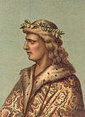
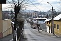

Cum ne numim străzile
Cele mai întâlnite
Tematică
Pe cine onorăm
Județe
Metodologie
Toate județele
Toate municipiile
📊
Scară
105.343
Adrese
203
Persoane onorate
🏷️
Tematică
55
% natură
persoane
22%
· abstract
15%
· ideologic
6%
⚥
Repartiție pe gen
94
% B
/
6% F
Persoane onorate, M vs F
🏆
Cei mai des onorați
#1 B
Mihai Eminescu
300
str.
#1 F
Ana Ipătescu
91
str.
🔝
Cele mai frecvente · Top 50
👥
Top persoane onorate
Bărbați
Femei
Non-române
🧭
Repartiție tematică
50.166 clasif.
50.166
total
🌿
natură
54.8%
👤
persoană
22.5%
💭
concept / abstract
14.9%
🚩
ideologic
5.6%
📅
dată / sărbătoare
1.5%
⛪
religios
0.7%
🌿
Subtipuri · Natură
🌸
flori
8371
🌳
copaci
8246
💧
apă
1641
🌱
plante
1460
🐦
păsări
1386
☁️
cer
1103
🚩
Tokeni ideologici
libertate
348
unire
329
tinerețe
326
victorie
282
pace
241
independență
207
republică
159
zi națională
153
muncă
144
progres
120
frăție
104
revoluție
79
⚥
Ecart de gen
203 pers.
Fiecare pătrat = 1 persoană
Bărbat
Femeie
191
/
203
bărbați din total
🎓
Profesia persoanei onorate
✍️
scriitor
45
🪶
poet
25
🗡️
voievod
21
🏛️
politician
18
✊
revoluționar
17
👑
rege / regină
10
🎖️
militar
10
🔬
om de știință
9
⏳
Epoca în care a trăit
🕯️
premodern (1700–1900)
89
🎩
interbelic (1900–1947)
45
🏰
medieval
33
🗽
generația de la 1848
20
⭐
comunism (1947–1989)
14
🏺
antichitate
4
🌍
Personalități non-române honorate pe străzi
11 persoane
🇭🇺
Petőfi Sándor
poet
58
🇭🇺
Ady Endre
poet
38
🇭🇺

Matei Corvin
rege / voievod
31
🇭🇺
Bartók Béla
compozitor
19
🇭🇺
Arany János
poet
18
🇭🇺
József Attila
poet
15
🇭🇺
Jókai Mór
scriitor
15
🇭🇺

Budai Nagy Antal
revoluționar
15
🇭🇺
Bethlen Gábor
rege / voievod
15
🇭🇺
Kossuth Lajos
politician
14
🇭🇺
Gábor Áron
militar
14
Concentrate predominant în județele cu comunități maghiare istorice (Harghita, Covasna, Mureș, Bihor).
📈
Notorietate Wikipedia · vizualizări lunare medii · ro.wikipedia.org · 12 luni
Alexandru Ioan Cuza
9.929
universal
Aurel Vlaicu
3.695
national
Alexandru Lăpușneanu
3.546
national
Avram Iancu
2.846
national
Anghel Saligny
2.335
national
Anton Pann
1.721
national
Alexandru Macedonski
1.403
national
Alexandru Averescu
1.320
national
Badea Cârțan
1.275
national
Barbu Ștefănescu Delavrancea
1.037
national
🌍
Recunoaștere globală · Wikidata
persoane
🌍
Universal
3
≥ 50 limbi Wikipedia
🇷🇴
Național
33
5–49 limbi
📍
Local
170
sub 5 limbi
📝
Renumiri
Secțiune în construcție — date indisponibile.
🏟️
Conteste tematice · top 7 din fiecare familie
🌸
Flori
1
Florilor
532
2
Trandafirilor
496
3
Liliacului
467
4
Lalelelor
375
5
Crinului
369
6
Rozelor
313
7
Narciselor
298
🌳
Copaci
1
Salcâmilor
379
2
Teilor
331
3
Stejarului
323
4
Plopilor
318
5
Teiului
293
6
Bradului
279
7
Salcâmului
258
🐦
Păsări
1
Ciocârliei
178
2
Berzei
122
3
Privighetorii
93
4
Rândunelelor
79
5
Mierlei
78
6
Cucului
77
7
Șoimului
75
🦌
Animale
1
Cerbului
114
2
Căprioarei
103
3
Zimbrului
70
4
Albinelor
70
5
Albinei
47
6
Ursului
32
7
Stupilor
29
☀️
Cer · lumină
1
Zorilor
389
2
Răsăritului
185
3
Amurgului
128
4
Apusului
118
5
Luceafărului
115
6
Aurora
35
7
Lunii
29
🔨
Meserii
1
morii
494
2
targului
130
3
fermei
96
4
fabricii
89
5
pescarilor
88
6
vanatorilor
85
7
uzinei
75